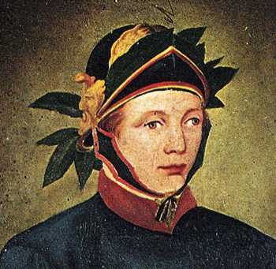

|
(Bicchierino) 1/9 - detto anche Morticina - Nato a Montepulciano (SI) il 3 novembre 1827 (vedi fede di nascita) 
   Carriera del 2 luglio 1844 riportata alla Nob. Contrada del Nicchio dal Fantino Pietro Tarquini detto Bicchierino di anni 17 di Montepulciano con il cavallo del Berni di S.Regina vinse tutte le prove; il giorno del Palio presentato che fu al canape rovesciò dall'altra parte perché la sua guisa non fù bastante a reggerlo, il cavallo fu ripreso dentro il Chiassolargo, fu riportato al canape e rimontato il fantino piangendo vinse il Palio...  zucchino originale indossato da Bicchierino durante il suo Palio vittorioso (foto di Andrea Mari) 

Probabilmente quella del luglio 1851 fu l'ultima presenza di Bicchierino in Piazza, anche se poi non corse il Palio.  Tarquini Pietro fu Paolo e fu Domenica N. - Scapolo, barrocciajo di Montepulciano S.Agostino Ingresso spedale il 4 maggio 1853, partenza il 9 maggio 1853, letto 100
| |||||||||||||||||||||||||||||||||||||||||||||||||